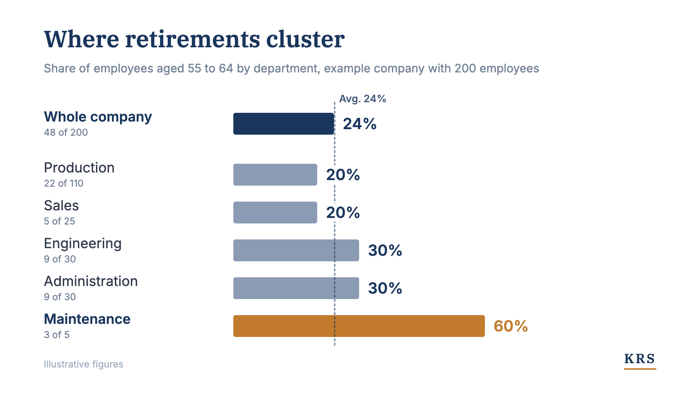
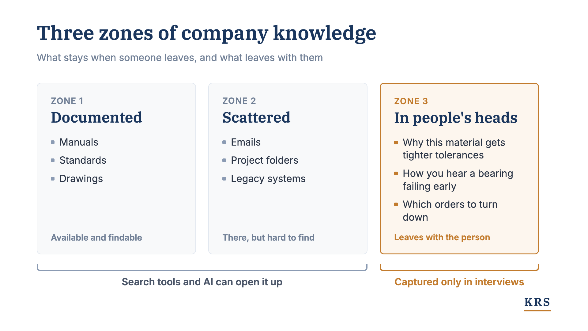

Why the retirement average misleads
Almost a quarter of Germany's workforce is between 55 and 64. On average that sounds manageable. In individual departments, though, several experienced people leave almost at once, and a long overlapping handover is no longer possible there.

Discussions of demographic change almost always come with averages. Almost a quarter of the workforce is between 55 and 64, spread across the next ten years. That sounds manageable. For securing knowledge in your own company, though, the average is the figure that reassures the most and helps the least. Retirements are not spread evenly across a company. They come in clusters, in individual departments and within a few years.
Over the summer I wrote a short LinkedIn series in German on the numbers behind this. Here I bring it together and add what we have seen in projects since: what is lost when experienced people leave, and where to start securing it.
The numbers
In Germany, 24 percent of employed people aged 15 to 64 are between 55 and 64, around 9.8 million people. That is the highest share in the EU, where the average is just over 20 percent (Federal Statistical Office, February 2026, in German).
A second figure shows the pace. Each year around 1.3 million people reach retirement age, while only about 800,000 younger people reach working age. The German Economic Institute (IW) expects the labour force potential to fall by about 7 percent to around 51 million by 2036. It puts the gap at 4.3 million workers. Two years earlier it had estimated three million (IW Köln, June 2026, in German).
The peak is still ahead. The baby boomer cohorts born between 1954 and 1969 number almost 20 million people. The largest post-war cohort was born in 1964, with 1,357,304 births (Federal Statistical Office, in German). It is the first cohort with a statutory retirement age of 67, so it retires regularly in 2031. The years with the most departures are still to come.
This has two consequences. Fewer people have to produce the same output. And more experience leaves companies than young employees arrive who could take it over one to one. The development is structural and will not pass by itself. It can be planned for, though, and what can be planned for can be prepared.
Why the average misleads
Companies hired in waves. Whoever built up a department in the 1990s hired several people of similar age at the time. They are now leaving together, within a few years.
An example: a company with 200 employees sits exactly at the national average, with 48 people between 55 and 64. Spread over ten years, that is just under five retirements a year, which can be planned. The maintenance team, however, has five people, and three of them leave within the next three years.

Overlapping handovers hit two limits
The usual response is an overlapping handover: the successor works alongside the predecessor for a year or two. This model is now reaching its limits from two sides.
It gets more expensive, because in a cluster several positions would have to be staffed twice at the same time. In the maintenance team from the example, that means three additional positions for two years.
And it is increasingly impossible, because the successor is missing. With 1.3 million people leaving and 800,000 arriving each year, many positions no longer have a one-to-one successor. Anyone trying to replace an experienced specialist competes with everyone else for a shrinking pool.
A position can be filled eventually. The experience that leaves with a long-serving specialist cannot.
What leaves with experienced people
To see what is lost when someone leaves, we distinguish three zones.
Zone 1 is the documentation: manuals, standards, drawings. It exists and can be found.
Zone 2 is scattered: emails, project folders, legacy systems. The knowledge is there, but somewhere in a file called "attachment_final_v3_NEW".
Zone 3 exists only in people's heads: why this material gets tighter tolerances, how you hear a bearing failing three weeks in advance, which orders are better turned down. It includes the colleague you call on holiday when the line stops.

Any AI tool can search zones 1 and 2 today. The answers still stay thin, because documentation describes the normal case. The standard says what applies. The most experienced people know when to deviate from it. Only both together give an answer an engineer will trust.
An example from one of our projects shows how large zone 3 is. We are documenting the quotation process of an industrial company. Whether a request is feasible, which question comes before costing, when a case turns into a special solution: the experienced people on the team decide that. A single expert interview produced more than 150 structured knowledge items that appeared in none of the documents we had read beforehand.
Why software alone does not solve it
AI agents can automate the standard case quickly, and the demo convinces within a few weeks. Things slow down at the exceptions. Which situations exist and how to recognise them is something the experienced people know. The correct answers for test cases come from the business side, and someone has to collect and justify them. And when a person decides an exception, one step is missing before it becomes a reusable rule: recording why it was decided that way.
The models get better every year, and anyone can buy them. The knowledge they are supposed to work with in your company is held only by your own people. Many of them will retire in the next few years.
Where to start
Open the department list and sort it by year of birth. Everyone finds their cluster. The only open question is whether you find it before people leave or after.
That is where securing knowledge starts: where several experienced people leave at the same time and overlapping handovers no longer add up. In our projects we pick one topic that currently depends on a few people and work in three steps.
Interviews along real cases. Abstract process questions return what is already documented. Real cases bring out the decision rules behind them, including the exceptions.
Every statement with source and reasoning. Interviews and existing documents are brought together. Contradictions between experts become visible and are resolved before anyone works with the result.
A knowledge base for people and AI. New colleagues read the result just as AI assistants do. The experience of the senior staff reaches beyond their own desks.
For the experts this means three to five hours a week. A topic takes us about eight weeks.
Securing the knowledge while it is still in the company is the part of the handover that works even without a successor.